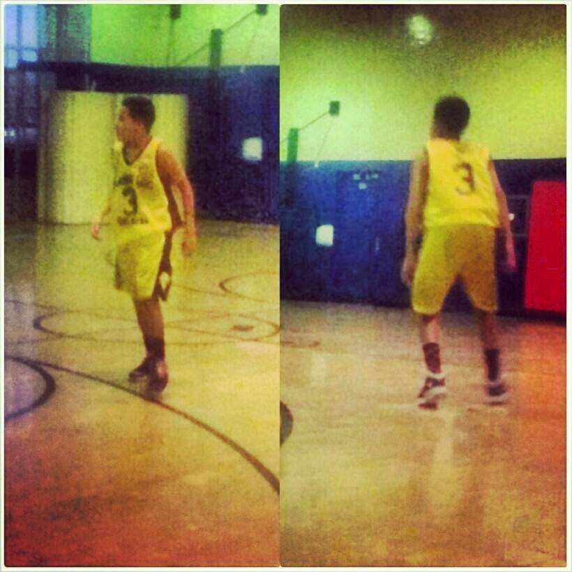

my bio
Tell Me About Yourself
My name is Cristopher Reyes
I go to Fannie Lou High School and im going to the 10th grade
I want to be a electrician because my father taught me how to work to be a electrician. Also I want to be this because im good at fixing lights.

Play basketball
Hang out with my friends
Go To School
Eat food
My Bio

Title: How Does Basketball Work?
Proposal: We will show what Basketball is.
Parameter: 3 page website images , Colored list , h1 - h6
Some people may think Basketball is boring but it is very fun when you love the game. People who play Basketball do not get tired of playing it because it’s too fun. Basketball is a team sport, that is why people who like to play Basketball likes the game because you get to play with your friends and family. Basketball requires a Basketball court, team players and a Basketball. It seems boring but to me it's very fun.This shows how Basketball works.
This is two NBA players and this shows how it's a team sport because you play with your team and it creates a relationship and a bond on and off the court.
Mostly All people in the NBA have a lot skills but if you want the skills they have you have to work hard and get your skills better. For Example , Kyrie Irving is one of the best players in the NBA and one of his main skills is dribbling the Basketball. His crossover is very fast that anybody that guard him will get crossed over because of his quick handles of the Basketball.
Lebron James is one of the greatest players in the world and his main skill is dunking and being aggressive. A lot of people can not play like him because of how aggressive he is. When Lebron goes to the paint some people are like babies to him because of his strength and he uses it to play Basketball. This is why he is one of the greatest players that is in the NBA.
Page 1: We will show how basketball works.
Page 2: We will show people with skills and what is skills.
Page 3: We will show the Basketball calls and how you supposed to play.
Targeted Audience: People who don't know what basketball is and wants to know about Basketball. Also people who wants to improve their skills.